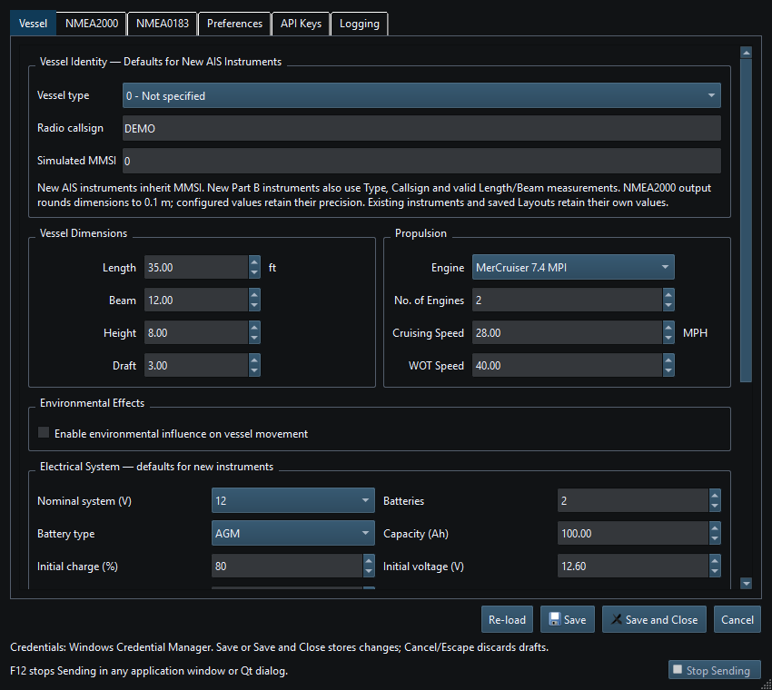

AIS instruments simulate supported Class B identity and position messages. They do not operate an AIS radio transponder. Use a designated test identity on an isolated network.
The simulated MMSI is not the CAN source address or NMEA2000 device NAME. New Part B instruments use supported type/callsign/length/beam defaults; wire-format dimension rounding and canonical configuration precision are separate.
Supported Class B messages carry different identity/position fields. See the PGN reference. Class A, DSC and NMEA0183 VDM/VDO sentence instruments are not available.
Viewer updates supported AIS instruments by source and target identity. Signal K publishes supported target mappings; this does not transmit an AIS radio signal. Check the receiving application for the fields it uses.
Review MMSI, callsign, vessel names and coordinates before sharing screenshots, logs or Layouts. Use example identities and positions in support requests.

Figure 56. Set defaults for new AIS instruments in Setup; existing instruments keep their saved values. Click to enlarge.
Generating NMEA Data · Enable, Dispatch and Sending · Manual Vessel Movement · Autopilot and Route Following · Game Controller Mode · Engine and Transmission Simulation · Weather and Environmental Simulation · Windlass Simulation · Connection Troubleshooting · Route Overview · Engineering Units